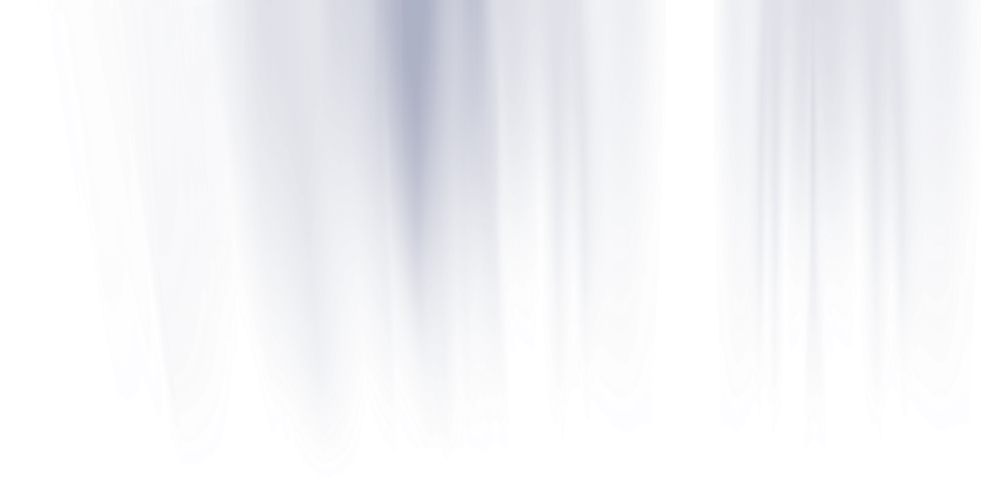
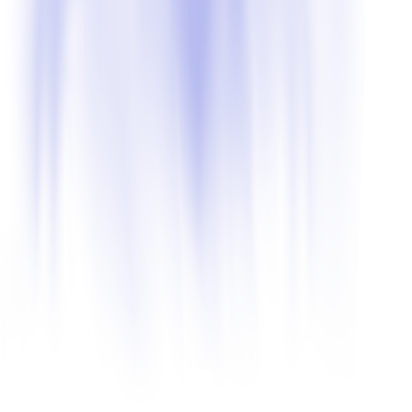
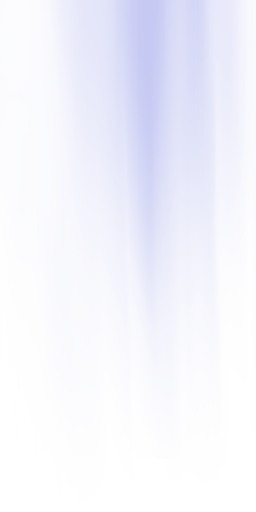

Home



 Start9
Start9
Home
 Start9
Start9
by rob55rod/Splitwirez, December 8th, 2017
Hello everyone,
We've decided to change the direction in which Start9 is going to be further developed. It's become a full-on shell replacement, one which aims to be not only modular, but extensible to your heart's content. The project's goals have strayed and expanded so far from where we started that we've realized it would be easier to rewrite everything with modularity and recyclability in mind, rather than to rework our existing code. All of this is good news, but currently, we have not gotten all that far. Adding to that, we're going to need all the help we can get. We need mainly programmers, experienced in C#, as we're using .NET 4.0 and WPF.
Please check out our GitHub here:
We've also opened up the Start9 Discord Server, so everyone can keep an eye on our progress, contribute ideas, etc. You can join here: